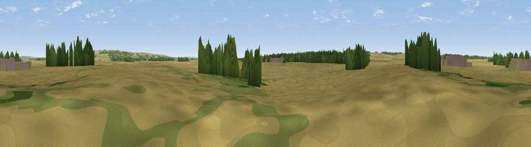

Viewpoint near Appleby
#44353 in England · top 94% of its area beats it · near ApplebyThe view, rendered

A 360° render of this exact spot computed from the terrain model, tree cover and land cover — summer colours, afternoon light, calibrated against photographs of famous viewpoints. Real trees, hedges and buildings will differ in detail.
The panorama
Grey silhouette: terrain skyline in each direction (720 bearings, Earth curvature and refraction included). Dashed green: skyline with trees (+15 m) and buildings (+8 m) as obstacles. Blue strip: how far the ground is visible on each bearing.
Where the view opens
Wedge length = distance to the farthest visible ground on that bearing (vegetation-aware). Rings at 10, 25 and 50 km.
What fills the view
76% cropland · 12% woodland · 10% grassland · 2% built-up
Angular shares of the visible panorama (visual magnitude), not map area. Landscape diversity 0.33 (0–1 Shannon).
Key numbers
More beautiful places nearby
The staircase of upgrades: each row has a higher view potential than everything closer. Driving times are estimates from straight-line distance, calibrated against real road routing — check an actual route before setting out.
| Place | Direction | Drive | Score |
|---|---|---|---|
| Sheffield's Hill | WSW · 4 km | ~10 min | 44.4 |
| Saxby Wold | ENE · 4 km | ~10 min | 53.9 |
| Viewpoint near South Ferriby | NE · 6 km | ~12 min | 57.2 |
| Viewpoint near South Ferriby | NE · 6 km | ~13 min | 58.1 |
| Viewpoint near Burton Stather | WNW · 9 km | ~18 min | 62.4 |
| Viewpoint near South Newbald | N · 18 km | ~31 min | 64.9 |
| Viewpoint near Claxby | SE · 25 km | ~40 min | 70.5 |
| Viewpoint near Claxby | SE · 26 km | ~42 min | 71.5 |
53.63249, -0.55722 · source: osm peak · position refined by local search. Computed location — check access rights before visiting.